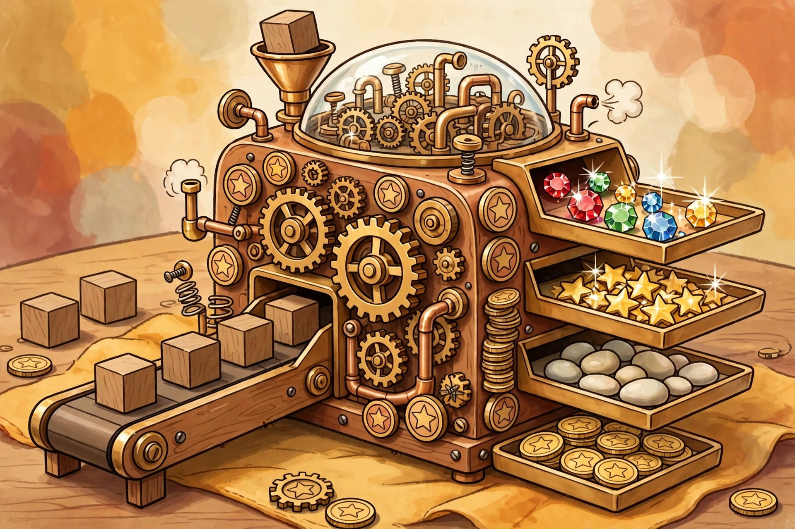

Engine-building games, explained

"Engine building" might be the most-used and least-explained phrase in the hobby. It appears on box backs, in reviews, and in recommendations — "great engine!" — as if everyone already agrees on what an engine is. New players nod along and quietly guess. This guide removes the guessing: what an engine actually is, the parts every engine is built from, and — the part most explainers skip — how to tell when your engine is finished and it is time to stop building and start scoring.
What an engine actually is
The review site Roll to Review, in its genre guide, puts the definition cleanly: an engine-building game is one where players create a system that converts resources into points, money, or actions with increasing efficiency over time. You start with a weak, clunky setup and gradually upgrade it into something powerful. Every word of that definition does work. Conversion is the heart of it: an engine takes something in — gems, food, cards, actions — and puts something more valuable out. And the conversion has to improve. A game where you trade two wood for a point on turn one and make exactly the same trade on the final turn has a market, not an engine.
That is also what separates engine building from its neighbours. A game can hand you a growing pile of stuff without any engine at all, if the pile never makes the next thing cheaper, faster, or stronger to get. The test to carry through this whole guide: does what you built change what your next turn can do? If a purchase sits inert on your board, it is decoration. If it discounts, multiplies, or unlocks the purchases after it, it is engine.
The conversion chain, part by part
Nearly every engine, whatever the theme, is assembled from the same four parts:
Income. Something has to flow in. Early on this is usually an action that feels almost insultingly small — take a few tokens, gain one resource — because the whole arc of the genre is starting from nearly nothing.
The converter. A card, tile, or board section that turns income into something else: resources into better resources, resources into discounts, discounts into points. Converters are the parts players actually hunt for, because a good one quietly improves every future turn.
Permanence. Engine parts stay. What you build early is still on the table, paying out, in the late game — that is what "increasing efficiency over time" requires in practice. Permanence is why early decisions feel weighty — a converter bought in round one might pay for itself ten times; one bought near the end may never pay at all.
The cash-in. Sooner or later the engine has to be pointed at the score track. Points are usually a separate purchase from engine parts, and the tension of the whole genre lives in the gap between the two: every turn spent buying points is a turn the engine does not grow, and every turn spent growing is a turn the point total stands still.
Engines also come in sub-forms. Roll to Review groups them by what the engine is physically made of: tableau-building (a grid of cards in front of you), deck-building (the engine is the deck you are assembling), bag-building, and dice-building. The material changes the feel — a tableau is visible and plannable, a deck is shuffled and hopeful — but the conversion chain underneath is the same.
Two engines, verified: Splendor and Wingspan
The clearest way to see the range of the genre is two respected, pure examples at opposite ends of the clock. Specs below are verified against publisher and reference listings, checked for this guide on October 16, 2026.
| Spec | Splendor | Wingspan |
|---|---|---|
| Publisher | Space Cowboys | Stonemaier Games |
| Players | 2–4 | 1–5 |
| Playing time | 30 minutes | 40–70 minutes |
| The engine is… | Development cards that permanently discount future purchases | Bird cards played into three habitat rows, each bird extending the chain of effects that row produces |
| The cash-in | Reaching 15 prestige points triggers the final round | Most points after 4 rounds wins |
Splendor is about as pure as an engine gets. On a turn you take gem tokens, reserve a card, or buy a development card — and bought cards grant permanent discounts, so each purchase makes the next one cheaper. Nothing else is hiding in the box: the 90 development cards are the game, and the engine is a discount ladder you climb until points become affordable. Wingspan, designed by Elizabeth Hargrave and published by Stonemaier Games in 2019 — it won the 2019 Kennerspiel des Jahres — builds its engine from 170 unique bird cards played into three habitats. Stonemaier's own description is that each bird extends a chain of powerful combinations in its habitat: play a bird into the food row and the gain-food action gets better every time it runs, for the rest of the game.
Price check, dated: on October 16, 2026, Stonemaier's Canadian store listed the Wingspan base game at $76.00 CAD against a $90.00 CAD regular price. Prices and print runs change — treat that as a snapshot, not a promise, and check your local game store.
The timing problem: build, then cash in
Here is the skill the genre is actually testing, and the one new players are rarely told about. Every engine game has an invisible crossover point: the moment when one more engine part can no longer repay its cost before the game ends. Before the crossover, building is correct — the part will fire many times. After it, building is a leak — the part fires once or twice and never returns its price, while the points it could have bought sit unbought.
A usable decision framework, in three questions:
1. How many times will this part fire? Count the rounds or turns remaining and be honest. A converter bought with a third of the game left needs to pay for itself in that third. In Wingspan's fixed structure — most points after 4 rounds — a bird played in the final round has exactly one round to justify itself, which is why endgame Wingspan turns toward eggs and points. In Splendor, the equivalent count is turns: once any player is close to 15 prestige points, the game can end within a round or two, and a discount card bought then is almost always a turn spent not scoring.
2. Does it speed up the cash-in, or just feel productive? Some parts raise income without raising your score rate — satisfying, and wrong, late. If the part does not shorten the road to points, it is engine for its own sake.
3. What is the leader doing? Engine games end on schedules — a points threshold, a round count. If another player's engine is already cashing in, your crossover point moves earlier whether you like it or not. The best engine at the table is worthless if the game ends while it is still warming up.
None of this requires spreadsheets. It requires glancing at the remaining game length before each purchase and asking whether the part still has time to pay. That single habit is most of the gap between beginners and strong engine players.
Is an engine builder right for your group?
Engine builders reward planners and punish nobody directly — interaction is usually indirect, a race rather than a fight, which makes the genre an easy sell to groups that dislike confrontation. The failure mode to know about is downtime: as engines grow, turns can chain into long sequences of triggered effects, and a player running a big engine may take noticeably longer turns than everyone else. Groups that value pace over payoff should start at the Splendor end of the table — 30 minutes, three possible actions, nowhere for a turn to hide — before graduating to roomier designs.
And a note on procedure, since explainers in this series carry one where it helps: when teaching an engine game, teach the cash-in first. Show new players what a point costs and what ends the game, then show them the converters. A player who understands the destination can judge every engine part for themselves; a player taught parts first will build happily all game and discover the score track in the final round.
FAQ
Is deck-building the same as engine building? They overlap constantly, but they are not the same claim. Deck-building describes what you are assembling — a deck, during play. Engine building describes what the assembled thing does — convert resources with increasing efficiency. Plenty of deck-builders are engines; some are not, if the deck never makes later turns stronger.
Why do engine games start so slowly? By design. The weak opening is what makes the late game feel earned — the contrast between the first sputtering turns and the final chained turns is the genre's core pleasure. If the first two rounds feel underpowered, the game is probably working as intended.
What is the simplest real engine game to start with? On the verified specs above, Splendor is the cleanest starting point: 2–4 players, 30 minutes, three actions per turn, and an engine made of exactly one idea — discounts that compound. Wingspan is the step up when a group wants theme, variety across 170 cards, and a solo option in the same box.
New to the vocabulary of the hobby? Our complexity ratings guide explains the weight numbers you will see attached to both of these games.